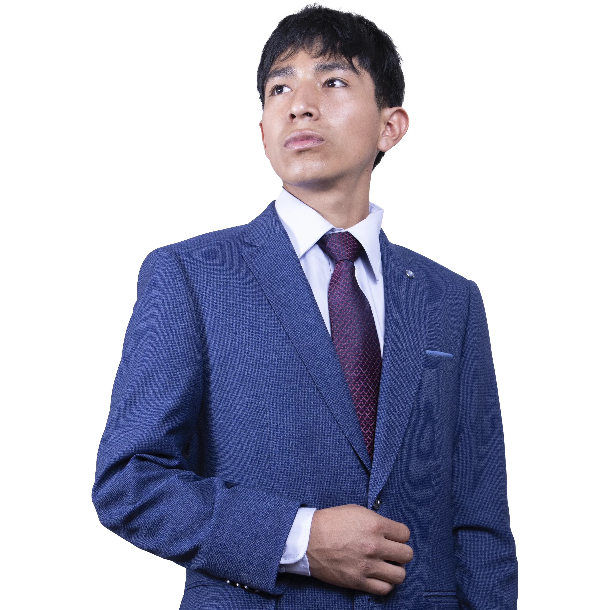

Estudiante comprometido con la innovación y el desarrollo estudiantil.
Soy estudiante de Ingeniería de Sistemas en la UNSCH, combino mi interés en la ciberseguridad con una fuerte pasión por el desarrollo comunitario. Me caracterizo por mi disciplina, mi capacidad de trabajo en equipo y mi compromiso con el entorno universitario, lo cual he demostrado a través de mi participación activa en diversas actividades académicas, extracurriculares y la danza de la facultad. Busco generar un impacto positivo y significativo, aplicando mis conocimientos y habilidades para impulsar la mejora continua y la innovación en nuestra escuela.
Participación activa en organización del FENACIT y presentaciones de danzas, desarrollando desde temprana edad habilidades en logística de eventos culturales.
Mantenimiento del compromiso con logística de eventos de integración universitaria, asegurando ejecución eficiente y participación estudiantil.
Coord. de Economía de la Junta Directiva de mi salón, gestionando transparentemente recursos y presupuestos para garantizar éxito de eventos culturales.
Liderazgo estratégico con capacidad sólida para toma de decisiones efectivas en contextos complejos.
Comunicación efectiva y asertiva para coordinar equipos y transmitir mensajes con claridad.
Inteligencia emocional desarrollada y resiliencia para manejar situaciones desafiantes con madurez.
Gestión financiera transparente y logística eficiente para eventos culturales exitosos.
Trabajo en equipo excepcional con habilidades avanzadas de coordinación y organización.
Generar impacto positivo transformando eventos culturales en espacios de integración donde todos mostremos nuestras capacidades como estudiantes de Ingeniería de Sistemas.
Mejorar cada actividad con gestión clara y responsable de recursos para disfrutar eventos bien organizados que fortalezcan el sentido de pertenencia y orgullo comunitario.
"Eventos culturales que unen e identifican."